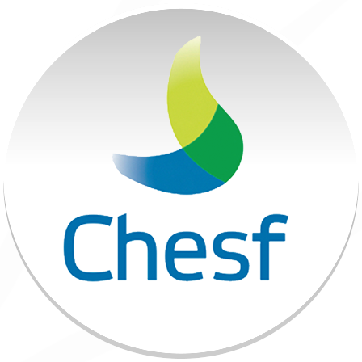

Linha do tempo
Litoraneus
Analista de T.I/Sistema
- Desenvolvimento Web Full-stack (PHP, JavaScript, HTML, Css, React)
- Desenvolvimento e utilização de office scripts, vbas e Dashboards para analise de dados
- Utilização do sistema TOTVS - Virtual Age para permições de acesso e controle de dados
- Administração de redes de computadores com Active-Directory
- Realizações de manutenções analíticas em desktops de forma remota ou presencial.
June 2022 - Present
January 2022 - June 2022

CHESF
Data-Analytics
- Realização de analise dados
- Consultas e administração em banco de dados Mysql
- Utilização do sistema TOTVS - Virtual Age para permições de acesso e controle de dadosdesenvolvimento de Dashboards em Power B.I e Excel
- Uso de programação office scripts e visual basic for application.

CHESF
Assistente Administrativo Nivel 1 e Nivel 2
- Responsável pela organização de documentação e relatórios utilização de planilhas Excel e trabalhos diversos em Word, Sistema utilizados (SAP, Frota-Web, Ticket-Log entre outros correlacionados).
January 2018 - January 2022
June 2014 - January 2015
Marista
Estágio de Suporte T.I
- Responsável pela manutenção de diversas máquina, microcomputadores e desktops, variadas instalações de software nos mesmos, resolução de variados problemas ligados a computadores.